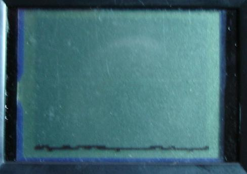
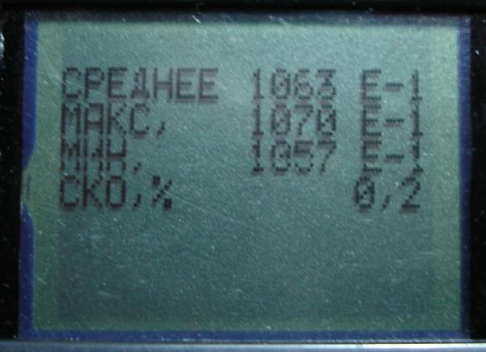
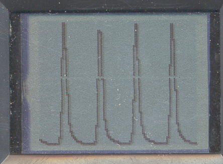
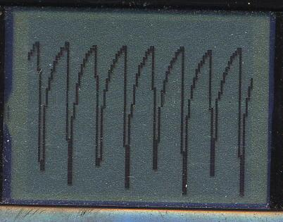
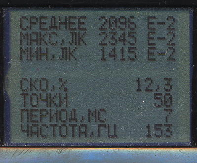

Pocket luxmeter LG05, 8 ranges, menu, 400-point graphs, memory for 40 graphs, ripple measurement, USB interface
.
Software and several recorded arrays by the luxmeter are in the archive - without the luxmeter you can familiarize yourself with the application operation, as well as view the signal graphs recorded by the luxmeter from lamps, computer TFT monitors, and TFT TVs.
Tutorial videos are placed in the archives: Menu.zip (988 KB, how to
work with the luxmeter menu)
and Measure.zip
(1.26 MB, how to perform measurements and records to memory),
the archives contain exe files, which already include a video player.
Display of the luxmeter is graphical 98 x 64 pixels, displaying in textual and graphical format.
Power supply of the luxmeter is from two AA batteries, power saving, auto power off (a small current consumption remains), power switch.Features of the luxmeter
LG05 USB
allows selecting the measurement range, setting the measurement duration, the measurement start delay, and enabling/disabling the audio alarm.
During measurement, 400 samples are written to the luxmeter memory, and the average, minimum, and maximum values, as well as the standard deviation of the measurement result, are calculated from them.
Information on the luxmeter display is also presented in graphical form. It is possible to display the entire graph (to show 400 points on a 98-point display, every 4th point is shown) or scroll the graph (by 98 points). Fast scrolling - with a shift of 10 points (the entire graph scrolls in about 6s) and slow - point by point.
Graph scrolling is complemented by the capability of determining time intervals with subsequent conversion into frequency displayed on the luxmeter display.
This capability is also used to refine the results when measuring periodic signals with the luxmeter: the user can indicate an interval on the graph that contains an integer number of signal periods; on this interval, the refined average value and standard deviation are determined.
Determining time intervals from the graph displayed on the luxmeter display with user participation seemed more expedient than automatic detection, since periodic signals from lamps often turn out to be noisy, and for reliable automatic frequency detection, for example, using an autocorrelation function or by signal crossings through the average value level, a microcontroller with a large program memory and RAM is required; such microcontrollers are larger in size (critical for the chosen design of the luxmeter). For the luxmeter with a USB interface, automatic frequency detection is provided in the computer application.
In this modification of the luxmeter, it is possible to record up to 20 arrays of 400 samples each, with subsequent viewing of both the graphs and computation results on the luxmeter display. The arrays can be transferred from the luxmeter to a computer via the USB interface. The developed computer application allows displaying results, graphs, saving arrays, and documenting the obtained results.
The figure shows the luxmeter with
a connected USB cable against the background of a computer
monitor with the running application that displays
the same graph as the luxmeter display.
Click on the picture with your mouse to view
the full-scale photo of the luxmeter.
Signal graphs and measurement results,
recorded by the pocket luxmeter (photo
of the LG05 display).
All monitors were tested while
displaying static images (text
or picture).The measurements
were carried out in the absence of external
artificial lighting.
The measurements were taken at various distances
from the surfaces of the monitors and with
images of different
brightness levels. Therefore, the "RIPPLE%" metric is of interest (in these
photos, the old variant is shown: "SD%").
Graph
and result for the TFT monitor
Samsung SyncMaster 152B.
Screen refresh rate is 60 Hz,
Flicker
is also 60 Hz.


TFT monitor Samsung SyncMaster 173P.
Screen refresh rate is set to 60 Hz. No flicker.

CRT monitor
Samsung SyncMaster 753DF
Frequency 85 Hz


Fujitsu-Siemens laptop monitor
Frame rate is set to 60 Hz, while the recorded signal frequency is
150 Hz